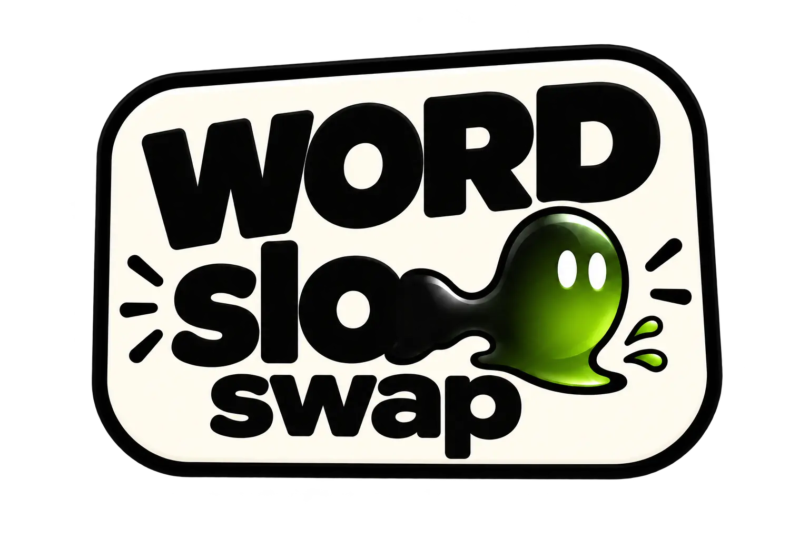

Gathering the slop…
Tap a word to lift it. Then tap an empty space to place it. Tap a filled space to swap.
Words can move between any lanes. Select a placed word and tap Return to pile to put it back.
The small lock marks a word that stays put. Each lane’s title is your free base hint.
Extra clue = 1 star. Purchased clues stay yours. Earn 1 star the first time you complete the tutorial, and 1 for your first complete Five Slops board.
You choose when to press CHECK THE SLOP. Wrong attempts cost nothing and keep every word exactly where you put it.